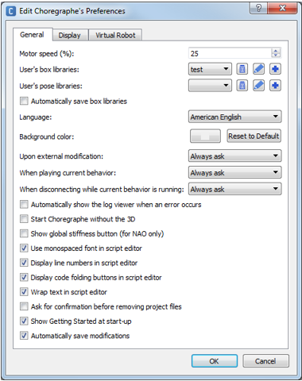
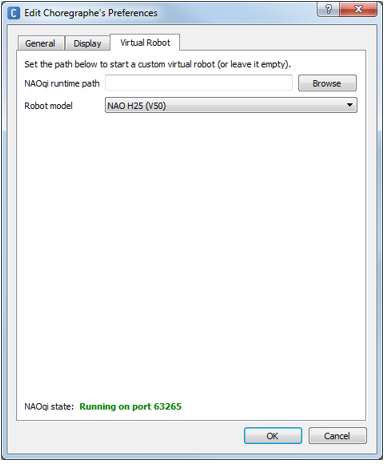

Choregraphe preferences¶
How to modify Choregraphe preferences¶
To modify Choregraphe preferences:
| Step | Action |
|---|---|
Choose Edit > Preferences. The following widget is displayed:  |
|
| Click the OK button. | |
| Quit and restart the application in order to make sure all preferences are applied. |
List of preferences¶
The Choregraphe preferences widget has 3 tabs:
General¶
| Name | Description |
|---|---|
| Motor speed (%) | Speed of the robot’s motors when:
Warning: It is not advised to exceed 75% as it could prematurely damage the motors of the robot. |
| User’s box libraries | Allows you to choose one or more Box libraries saved on your computer which will be automatically loaded at Choregraphe startup. For further details, see: Managing Box libraries. |
| User’s pose libraries | Allows you to choose one or more Pose libraries saved on your computer which will be automatically loaded at Choregraphe startup. For further details, see: Pose library panel. |
| Automatically save box libraries | If enabled, when you exit Choregraphe the opened Box libraries will be automatically saved. |
| Language | Language of Choregraphe interface. |
| Background color | Color of the background of Choregraphe interface. |
| Upon external modification | Choose the action to take whenever your currently opened Project directory is modified by an external application. Select:
|
| When playing current behavior | Choose whether the current Project files should be saved or not when the current Behavior is about to be played. |
| When disconnecting while current behavior is running | Choose whether the current Behavior should be stopped or not when Choregraphe is about to close its connection with the robot. |
| Automatically show the Debug Window when an error occurs | If enabled, the Log viewer is automatically displayed as soon as an error occurs in the execution of a Behavior. |
| Start Choregraphe without the 3D | Replaces the 3D view with a static 2D picture of the robot. So you do not have any feedback anymore about the move of the robot but it does not take so much processor. Moreover, with H25 and H21, you are still able to move the joints of the robot by selecting the body part you want to move. For further details, see: Robot View. |
| Show global stiffness button, for Nao only | Show on the toolbar, the deprecated button:
Warning: only for experimented users. |
| Display monospaced font in script editor | If enabled, the font used in the script editor is monospaced. It means that any character will take the same space on the screen as another (which is not the case of the font used by default). For further details, see: Script editor panel. |
| Display code folding buttons in script editor | If enabled, a + / - button allows collapsing/expanding script lines. For further details, see: Script editor panel. |
| Wrap text in script editor | If enabled, the text is wrapped according to the panel width. For further details, see: Script editor panel. |
| Ask for confirmation before removing project files | If enabled, a confirmation message appears when removing a file from the current project. |
| Show Getting Started at start-up | If enabled, the Getting Started windows appears at start-up. |
| Automatically save modifications | If enabled, changes are automatically saved. |
 Set on/off the stiffness . Enabled only for NAO.
Set on/off the stiffness . Enabled only for NAO.{kind=link}
Display¶
This tab enables to choose the graph color of each motor in the curve editor of the Timeline.
Virtual Robot¶
This tab allows you to customize the simulated robot included in Choregraphe, called virtual robot.
{kind=link}
For further details, see: Simulated robots.
| Name | Description |
|---|---|
| NAOqi runtime path | Allows you to define a customized NAOqi executable as virtual robot. Select the path of the NAOqi executable you want to use. If not specified, virtual robot uses the standard NAOqi installed with Choregraphe. |
| Robot model | Allows you to select which version of robot you want to test and display when the local NAOqi is running. Select one of the available configuration file: [Robot_Name][Body_Type][Version].xml Where:
For example, |
| NAOqi state | Displays the current status of the virtual robot, and its port. |